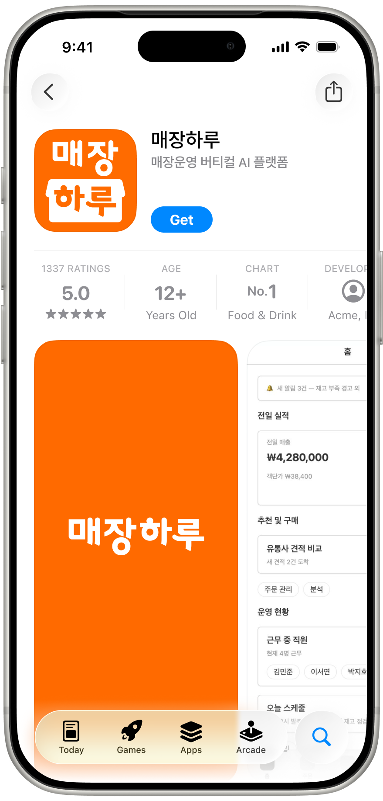

자영업자 매장운영 버티컬 AI
매장하루
자영업자의 디지털 마케팅 주권을 되찾아주는 매장운영 AI 플랫폼. 리뷰와 평판 데이터를 사장님 언어로 해석하고, 에일리AI가 오늘 할 실행 과제를 알려줍니다.

2026.11.01 정식 런칭
매장하루 런칭까지
- D
- --
- H
- --
- M
- --
- S
- --
2026.11.01 정식 런칭
런칭 전까지 현장 사장님들의 이야기를 듣고 있습니다
- D
- --
- H
- --
- M
- --
- S
- --
- 하루 한 번이면 끝
- 리뷰·평판 데이터 해석
- 에일리AI 액션 추천
WHY
손님은 계속 오는데, 마케팅과 운영은 늘 벅차지 않으셨나요?
매장하루는 리뷰를 답글로 끝내지 않습니다. 고객이 남긴 평판 데이터를 매장 운영 개선과 매출 액션으로 연결해, 오늘 무엇부터 하면 좋을지 알려줍니다.
오늘의 매장 브리핑
09:00 업데이트
PRODUCT
리뷰를 답글에서 끝내지 않고, 매출 액션으로 연결합니다
매장하루는 리뷰·평판 데이터를 분석한 뒤, 대화형 AI 에일리AI가 사장님이 바로 이해하고 실행할 수 있는 액션카드로 바꿔줍니다.
에일리AI의 오늘 제안
오늘 손님을 더 오게 하려면 이것부터 해보세요
오늘의 액션
대표 메뉴 사진과 리뷰 답글을 먼저 정리하세요
검색 노출은 늘었지만 메뉴 클릭률이 낮아요. 에일리AI가 온라인 발견률과 리뷰 감성을 함께 보고 오늘 할 일을 골랐습니다.
리뷰 감성
핵심질문
사진 교체와 답글 실행 후 길찾기 클릭이 왜 증가했나요?
-
01
리뷰·평판 데이터 분석
손님들이 좋아하는 점과 아쉬워하는 점, 온라인에서 우리 가게가 어떻게 보이는지 분석합니다.
-
02
쉬운 해석
복잡한 대시보드 대신 “오늘 손님을 더 오게 하려면 이것부터 해보세요”처럼 사장님 말로 바꿉니다.
-
03
에일리AI 액션카드
사진 교체, 리뷰 답글, 키워드 수정, 재방문 메시지처럼 오늘 바로 할 일을 추천합니다.
GUIDE
매장하루는 사장님의 어떤 일을 대신 정리하나요?
발견, 비교, 신뢰, 방문, 재방문까지. 손님이 오기 전후에 생기는 신호를 한 화면에 모으고, 에일리AI가 오늘 바로 할 일로 바꿔줍니다.
매장하루는 외식업 매장의 매출·리뷰·발주·근태 데이터를 하나로 모아, 오늘 매출의 원인과 다음 실행 과제를 알려주는 매장운영 버티컬 AI입니다.
온라인 평판을 사장님 말로
지도 노출, 사진, 메뉴, 가격, 리뷰 수, 평점, 최근 리뷰, 답글처럼 따로 봐야 했던 항목을 “요즘 손님이 믿고 올 만해 보이는지”처럼 바로 이해되는 문장으로 바꿉니다.
흩어진 운영 데이터를 한 화면에
POS 매출, 리뷰·평판, 예약·방문 반응, 발주·재고, 근태 데이터를 데일리 대시보드로 모아 오늘 매장이 좋아진 이유와 막힌 이유를 함께 보여줍니다.
에일리AI가 오늘의 액션카드로
리뷰 답글, 대표 사진 정리, 메뉴 정보 보강, 키워드 수정, 재방문 메시지, 발주 점검처럼 사장님이 오늘 바로 실행할 수 있는 일로 줄여 제안합니다.
매출 개선과 운영비 절감까지
분석에서 끝나지 않고 방문을 늘리는 마케팅 액션과 식자재 발주·재고 관리까지 연결합니다. 실행 이력이 쌓일수록 매장에 맞는 추천이 더 정교해집니다.
FAQ
실제 사장님들이 자주 묻는 질문
매장하루는 광고 대행 서비스인가요?
아니요. 광고를 대신 집행하는 서비스가 아니라, 사장님이 자기 매장의 매출·리뷰·방문 신호를 보고 직접 판단하고 실행하도록 돕는 매장운영 AI입니다.
디지털 마케팅 용어를 몰라도 쓸 수 있나요?
네. 매장하루는 지도 노출, 리뷰 신뢰도, 방문 의도 같은 표현을 “손님이 오기 전에 믿을 만해 보이는지”, “오늘 손님을 더 오게 하려면 무엇부터 할지”처럼 쉽게 바꿉니다.
에일리AI는 어떤 역할을 하나요?
에일리AI는 리뷰, 매출, 예약·방문 반응, 발주·재고 신호를 읽고 리뷰 답글, 사진 정리, 키워드 보강, 재방문 메시지, 발주 점검 같은 액션카드로 바꿔줍니다.
리뷰 답글 자동화와 무엇이 다른가요?
리뷰 답글은 시작점일 뿐입니다. 매장하루는 리뷰에 담긴 불만, 장점, 재방문 신호를 찾아 메뉴 사진, 키워드, 안내 문구, 재방문 메시지, 운영 개선 액션으로 연결합니다.
어떤 데이터를 먼저 보나요?
우선 리뷰와 평점, 검색·지도 노출, 길찾기·전화·예약 같은 방문 신호, POS 매출, 발주·재고 흐름을 함께 봅니다. 목표는 숫자를 나열하는 것이 아니라 오늘의 원인과 행동을 찾는 것입니다.
발주나 재고 관리까지 연결되나요?
네. 매장하루는 매출과 리뷰만 보는 도구가 아니라, 발주·재고·유통사 견적 흐름까지 연결해 운영비를 줄이는 방향으로 고도화하고 있습니다.
작은 음식점도 쓸 수 있나요?
네. 오히려 마케팅 담당자를 따로 두기 어려운 음식점, 카페, 배달 전문점이 하루 한 번 매장 상태를 점검하고 바로 실행하기 좋도록 설계하고 있습니다.
광고비를 쓰지 않아도 도움이 되나요?
도움이 됩니다. 매장하루는 광고 성과뿐 아니라 프로필 완성도, 리뷰 신뢰도, 사진·메뉴 정보, 키워드 노출 같은 무료 유입 개선 포인트도 함께 봅니다.
정식 런칭 전에는 어떻게 참여할 수 있나요?
정식 런칭 전까지 현장 사장님들의 이야기를 계속 듣고 있습니다. 매장하루레터를 통해 런칭 준비 과정, 현장에서 발견한 인사이트, 바로 실험해볼 운영 아이디어를 받아볼 수 있습니다.
FEATURES
에일리AI가 분석을 사장님 말로 바꿔줍니다
매장하루의 기능명은 어렵지 않아야 합니다. 사장님에게는 분석 메뉴가 아니라 오늘 장사를 더 잘 되게 만드는 행동 추천으로 보이게 설계합니다.
리뷰 감성 분석
요즘 손님들이 좋아하는 점과 아쉬워하는 점을 맛, 친절, 가격, 대기시간 같은 운영 언어로 정리합니다.
키워드 분석
우리 가게가 온라인에서 어떻게 보이는지, 어떤 검색어와 카테고리에서 놓치고 있는지 알려줍니다.
광고 성과 분석
돈 쓴 만큼 효과가 있었는지, 길찾기·전화·예약 같은 방문 의도 행동으로 연결됐는지 보여줍니다.
경쟁점 비교
주변 가게와 비교해 리뷰 수, 평점, 사진, 메뉴 정보, 키워드 노출에서 부족한 점을 찾아줍니다.
액션 리포트
분석 결과를 오늘 하면 좋은 일 3가지로 줄여 보여주고, 에일리AI가 액션카드로 실행을 돕습니다.
CRM
다시 오게 만들 손님 관리를 위해 리뷰 작성 고객, 쿠폰 반응, 재방문 타이밍을 함께 정리합니다.

디지털 마케팅 자립
자영업자의 디지털 마케팅 주권을 되찾아주는 버티컬 AI 플랫폼입니다.

운영 효율 극대화
우리 매장 데이터 기반 마케팅을 직접 설계하고 실행하도록 돕습니다.

AI 인사이트 제공
예약, 고객 관리, 매출 리포트를 한 화면에서 관리해 반복 업무를 줄입니다.
STORIES
자영업자를 위한 AI, 매장하루
마케팅과 운영을 한 번에, 하루 단위로 명확히 보여주는 매장 운영 OS.
손님은 계속 오는데, 마케팅과 운영은 늘 벅찼습니다. 매장하루는 채널마다 흩어진 데이터를 한곳에 모아 오늘 할 일을 명확하게 알려줍니다.
광고대행사나 복잡한 툴에 의존하지 않고, 사장님이 직접 데이터의 주인이 되도록 돕습니다. 캠페인 유지·중단과 재방문 메시지 타이밍까지 추천합니다.
요일, 시간, 메뉴, 객단가별 효율을 분석하고 인력·재고·프로모션을 함께 최적화합니다. 예약과 문의를 자동 분산하고 재방문을 유도합니다.
2026.11.01 정식 런칭
매장하루 런칭까지
- D
- --
- H
- --
- M
- --
- S
- --
런칭 전, 현장의 목소리를 듣는 중
사장님의 이야기가 매장하루의 다음 인사이트가 됩니다
정식 런칭 전까지 매장 사장님들의 실제 고민을 계속 듣고 있습니다. 매장하루레터에는 그 과정에서 발견한 리뷰·방문·재방문 인사이트와 오늘 바로 실험해볼 운영 아이디어를 담고 있어요.
현장 인사이트 받아보기